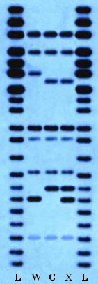

Eri liiki GMOde ristumisvõime oma looduslike liigikaaslastega on erinev – ühed ristuvad, teised mitte. Selleks, et saada selgusele, kas GMO ristub looduses elavate liigikaaslastega, tuleb neid mõnda aega koos kasvatada ning seejärel võrrelda järglaste geene GMO ja loodusliku liigikaaslase geenidega. Sel puhul tuleb analüüsida vastavate organismide DNA järjestusi. Organismi kogu DNA täpne analüüs on aga keeruline, aeganõudev ja kulukas. Enamasti kasutatakse sel puhul märksa kiiremat ja odavamat meetodit – DNA restriktsioonanalüüsi – mis üldjuhul annab üsna täpse tulemuse. DNA restriktsioon on geenitehnoloogiline meetod, kus kasutatakse spetsiifilisi ensüüme – restriktaase. Restriktaas on ensüüm, mis seostub DNA molekuliga ning katkestab DNA ahela kindla järjestusega kohast. Selle tulemusena saadakse eri pikkusega DNA lõigud, sest DNA molekulid lõhustuvad nii mitmeks lõiguks, kui mitu lõikepiirkonda nendes on. Kui kahe organismi DNA on identne, siis saame täpselt sama arvu ühepikkuseid lõike. Erinevused DNA järjestuses väljenduvad lõikude erinevates pikkustes.
Selleks, et muuta restriktsioonanalüüsil saadud DNA lõigud silmaga nähtavaks, tuleb need esmalt pikkuse järgi üksteisest eraldada ning seejärel värvida DNA. Sel viisil tekibki restriktsioonikaart e. profiil, mille alusel on võimalik võrrelda erinevate organismide DNAd. Allpool oleval pildil (joonis 1) ongi näha DNA restriktsioonanalüüsi tulemused. Selle esimeses ja viimases tulbas (L) on DNA täieliku lõhustamise tulemus, kus restriktaasi pole kasutatud. Siit saab näha, millised fragmendid saavad üldse moodustada. Igale tumedale triibule vastab ühe kindla pikkusega lõik. Seejuures kõige ülemine triip on kõige suurema molekulmassiga lõik ning sellest allapoole jäävad järjest väiksema molekulmassiga lõigud. Analüüsi seisukohalt on oluline võrrelda loodusliku (W), geneetiliselt modifitseeritud (G) ning nende kooskasvatamisel saadud järglaste (X) DNA lõike. Triipude võrdlemisega saate leida, kas kooskasvatatud järglased (X) sisaldavad täpselt sama DNAd, mis on looduslikes (W) või geneetiliselt modifitseeritud (G) liigikaaslastes. Kui järglaste DNA lõigud ühendavad endas nii looduslike kui ka GMOde DNA lõike, on toimunud nende omavaheline ristumine.
 Joonis 1. Restriktsioonanalüüsi foto, millel: L – DNA täieliku lagundamise produktid; W – loodusliku liigi restrikteeritud DNA; G – GMO restrikteeritud DNA; X – loodusliku ja GMO järglase restrikteeritud DNA.Mõelge hetk järele!
Järgnevalt leidkegi, kas pildil olev GMO ristub oma loodusliku liigikaaslasega?